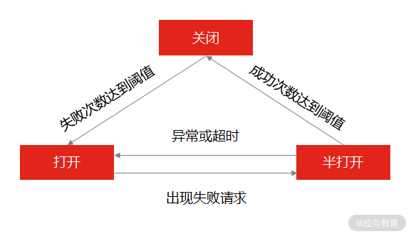

- 00 开篇词 中高级研发面试，逃不开架构设计这一环.md
- 01 研发工程师想提升面试竞争力，该具备这三个技术认知.md
- 02 研发工程师如何用架构师视角回答架构设计方案？.md
- 03 面试官如何考察与 CAP 有关的分布式理论？.md
- 04 亿级商品存储下，如何深度回答分布式系统的原理性问题？.md
- 05 海量并发场景下，如何回答分布式事务一致性问题？.md
- 06 分布式系统中，如何回答锁的实现原理？.md
- 07 RPC：如何在面试中展现出“造轮子”的能力？.md
- 08 MQ：如何回答消息队列的丢失、重复与积压问题.md
- 08 案例串联 如何让系统抗住双十一的预约抢购活动？.md
- 09 如何回答 MySQL 的索引原理与优化问题？.md
- 10 如何回答 MySQL 的事务隔离级别和锁的机制？.md
- 11 读多写少：MySQL 如何优化数据查询方案？.md
- 12 写多读少：MySQL 如何优化数据存储方案？.md
- 13 缓存原理：应对面试你要掌握 Redis 哪些原理？.md
- 14 缓存策略：面试中如何回答缓存穿透、雪崩等问题？.md
- 15 如何向面试官证明你做的系统是高可用的？.md
- 16 如何从架构师角度回答系统容错、降级等高可用问题？.md
- 17 如何向面试官证明你做的系统是高性能的？.md
- 18 如何从架构师角度回答怎么应对千万级流量的问题？.md
- 19 彩蛋 互联网架构设计面试，你需要掌握的知识体系.md
- 结束语 程序员的道、术、势.md
16 如何从架构师角度回答系统容错、降级等高可用问题？
上一讲，我带你学习了“评估系统高可用的指标”以及“如何监控系统高可用”今天这一讲，我们继续学习保证系统高可用的有效手段，比如系统容错、降级等，以及在面试时的重要考察点。
系统容错、降级等手段你肯定不陌生，很多文章都反复重申过，所以我的重点不再是普及相关理论知识，而是带你深入面试中对架构高可用问题的考察，带你避免面试中的易错点。
案例背景
先来看这样一道面试题：

商品的一次查询
某电商平台中有商品系统、促销系统、积分系统。商品的一次查询操作是由网关系统先调用商品系统查询商品列表，然后根据返回的商品列表信息，再查询促销和积分系统，匹配商品信息的促销活动和积分奖励，最终返回给客户端展示给用户。
大部分互联网公司，会有专门的研发团队分别负责这三个系统（比如 A 团队负责商品系统、 B 团队负责促销系统）。这会带来一个问题：出现流量高峰期时，虽然作为服务请求入口的商品系统很容易扩容，但对于商品系统依赖的其他服务，就不会有实时性的响应。
那么促销或积分系统就可能因为无法承担大流量，请求处理缓慢，从而让执行商品查询操作的服务线程阻塞，不能释放，直到所有线程资源被占满，无法处理后续的请求。
对于这种问题，你该如何处理呢？
案例分析
这道面试题就涉及了高可用架构的设计，我们再来分析一下商品的调用链条。在电商平台的商品系统中，一次系统查询的流程经历了三次调用，从网关系统开始，然后依次调用商品系统、促销系统、积分系统的三个服务，如果此时积分系统的响应时间变长，那么整条请求的响应时间也会因此变长，整体服务甚至会发生宕机。这就是服务雪崩现象：即局部故障最终导致了全局故障。
在分布式环境下，系统某一个服务或者组件响应缓慢，从而拖垮整个系统的情况随处可见。那你要怎么避免呢？这就涉及我们在 15 讲中的内容了。在 15 讲中我提到了，对于系统可用性，你要通过三个方面来解决：分别是“评估”“检测”和“保证”，具体如下。
- 用科学的方法评估系统的可用性指标；
- 通过实时监控预警检测系统的可用性；
- 通过系统架构设计保证系统的可用性。
解决的思路是：在分布式系统中，当检测到某一个系统或服务响应时长出现异常时，要想办法停止调用该服务，让服务的调用快速返回失败，从而释放此次请求持有的资源。这就是架构设计中经常提到的降级和熔断机制。
对应到面试中，面试官一般会通过如下两个问题考察候选者：
- 熔断和降级是怎么做的（考察你对原理性知识的掌握）？
- 你在项目中如何实现熔断降级（考察你的实战能力）？
你先要了解熔断和降级的原理，再结合实践设计实现它们。
案例解答
熔断设计的原理
形象一点儿说：熔断机制参考了电路中保险丝的保护原理，当电路出现短路、过载时，保险丝就会自动熔断，保证整体电路的安全。
而在微服务架构中，服务的熔断机制是指：在服务 A 调用服务 B 时，如果 B 返回错误或超时的次数超过一定阈值，服务 A 的后续请求将不再调用服务 B。这种设计方式就是断路器模式。
在这种模式下，服务调用方为每一个调用的服务维护一个有限状态机，在这个状态机中存在关闭、半打开和打开三种状态。
- 关闭：正常调用远程服务。
- 半打开：尝试调用远程服务。
- 打开：直接返回错误，不调用远程服务。
这三种状态之间切换的过程如下。
- “关闭”转换“打开”：当服务调用失败的次数累积到一定的阈值时，服务熔断状态，将从关闭态切换到打开态。
- “打开”转换“半打开”：当熔断处于打开状态时，我们会启动一个超时计时器，当计时器超时后，状态切换到半打开态。
- “半打开”转换“关闭”：在熔断处于半打开状态时，请求可以达到后端服务，如果累计一定的成功次数后，状态切换到关闭态。

熔断状态变更示意图
在工作中，研发工程师经常会通过 Netflix 的开源项目 Hystrix 来实现熔断的功能，并不会探究其中的原理，我在 07 讲中就说过：
虽然在实际工作中不推荐重复“造轮子”，但在面试中要证明自己具备“造轮子”的能力，因为要评价一个程序员是否对技术栈有全面的认识，考察其“造轮子”的能力是一个不错的切入点。
所以很多时候，面试官也会考察你在不通过开源组件的前提下，怎么实现断路器的功能。
如何设计实现一个断路器

断路器的流程图
- “关闭”转“打开”： 当请求到来，首先判断是否在熔断中，如果没有熔断，则正常调用系统服务，此时统计系统的调用状态，如果失败次数超过阈值，则断路器“打开”。
// 如果是关闭状态
if(breaker.isClose()) {
// 失败次数超过阈值
if(failCount.incrementAndGet() >= FAILS_THRESHOLD) {
// 设置为打开状态
breaker.setOpen();
}
}
- “打开”转“半打开”： 如果已经熔断，就初始化一个定时器，定期检测服务状态的可用性，如果服务达到了熔断的倒计时，则设置当前熔断器为“半打开”状态。
// 初始化定时器定期检测服务是否可用
new Timer("Service-Recover", true).scheduleAtFixedRate(new TimerTask() {
@Override
public void run() {
if (breaker.isOpen()) {
// 设置为半打开态
breaker.setHalfOpen();
}
}
}, 0, recoverInterval);
- “半打开”转“关闭”： 如果服务状态是半打开，则判断成功次数是否超过阈值，超过则设置断路器的状态为“关闭”。
// 如果断路器是半打开状态
if(breaker.isHalfOpen()) {
// 判断成功次数是否超过阈值
if(successCount.incrementAndGet() >= SUCCESS_THRESHOLD) {
// 设置断路器为关闭状态
breaker.setClose();
}
}
这样，当某一个服务节点出现问题，服务调用者的熔断器就会实时监测到，并且不再请求有问题的服务节点，避免单个节点的故障导致整体系统的雪崩。
说完了熔断设计的原理和实现，我们再来看看降级设计的原理。
降级设计的原理
降级设计本质上是站在系统整体可用性的角度上考虑问题：当资源和访问量出现矛盾时，在有限的资源下，放弃部分非核心功能或者服务，保证整体的可用性。这是一种有损的系统容错方式。
这样看来，熔断也是降级的一种手段（除此之外还有限流、兜底服务等）。
降级的实现手段是：在请求流量突增的情况下，放弃一些非核心流程或非关键业务，释放系统资源，让核心业务正常运行。比如 618 零点大促，电商平台一般会暂时关闭评论、退款功能。
那么问题来了，当你被问到“怎么做降级设计？”时，要怎么回答呢？
如何设计一个降级机制
从架构设计的角度出发，降级设计就是在做取舍，你要从服务降级和功能降级两方面来考虑。
在实现上，服务降级可以分为读操作降级和写操作降级。
- 读操作降级： 做数据兜底服务，比如将兜底数据提前存储在缓存中，当系统触发降级时，读操作直接降级到缓存，从缓存中读取兜底数据，如果此时缓存中也不存在查询数据，则返回默认值，不在请求数据库。
- 写操作降级： 同样的，将之前直接同步调用写数据库的操作，降级为先写缓存，然后再异步写入数据库。
我们提炼一下这两种情况的设计原则。
- 读操作降级的设计原则，就是取舍非核心服务。
- 写操作降级的设计原则，就是取舍系统一致性：实现方式是把强一致性转换成最终一致性。比如，两个系统服务通过 RPC 来交互，在触发降级时，将同步 RPC 服务调用降级到异步 MQ 消息队列中，然后再由消费服务异步处理。
而功能降级就是在做产品功能上的取舍，既然在做服务降级时，已经取舍掉了非核心服务，那么同样的产品功能层面也要相应的进行简化。在实现方式上，可以通过降级开关控制功能的可用或不可用。
另外，在设计降级时，离不开降级开关的配置，一般是通过参数化配置的方式存储在配置中心（如 Zookeeper），在高并发场景下，手动或自动开启开关，实现系统降级。
总结
这一讲我带你了解了雪崩产生的原因，服务熔断的实现方式以及服务降级的策略，今天你需要了解的重点是：
- 服务熔断其实是一个有限状态机，实现的关键是三种状态之间的转换过程。
- 降级就是在做取舍（取舍服务、取舍功能），本质上是为了解决资源不足和访问量过大的问题。实现上可以降低系统一致性、裁剪非核心服务，以及简化产品功能。
总之，服务的熔断和降级是互联网保证系统稳定性和可用性的重要手段，在你的架构设计中，如果涉及系统与第三方服务调用的情况下，都需要考虑增加服务熔断和降级方案。当然，高可用的设计方案不仅仅只有熔断和降级，还有如服务冗余、负载均衡、故障隔离、服务限流等设计方式。
总而言之，既然系统出故障是不可避免的，那做架构设计时就要把故障当作不可或缺的一环来处理，因此在分布式系统设计的和开发的过程中，要通过各种架构手段来提高系统可用性。